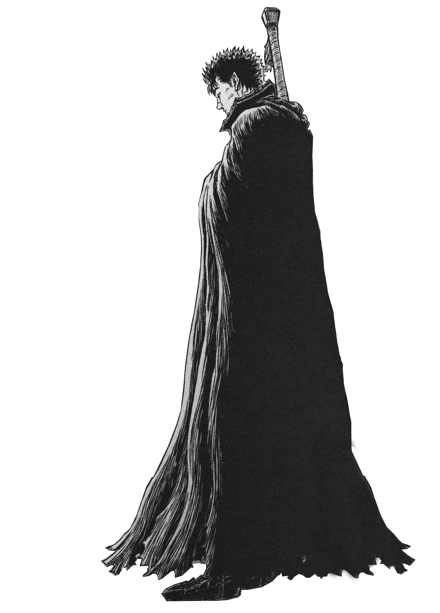
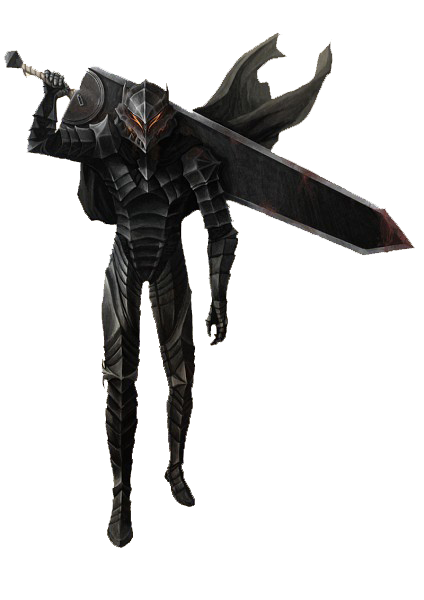
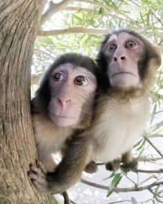
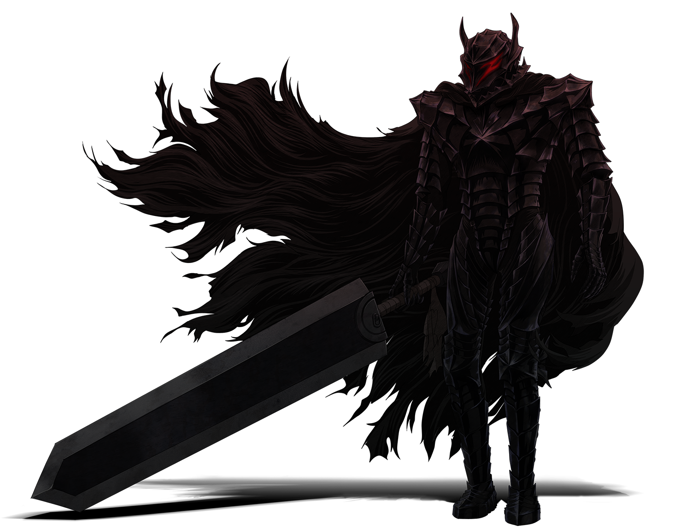

Целеустремлённость и упорство
Одна из главных черт Мишки — его способность долго идти к цели, даже когда результат не виден на горизонте. Он не бросает начатое после первых неудач, а продолжает двигаться вперёдь, проявляя настоящую настойчивость

Бурмалда

Эмоциональная глубина и чуткость
Мишка — человек с тонкой душевной организацией. Он чувствует острее, чем многие, и в этом его особая сила. Эта чувствительность позволяет ему замечать то, что другие пропускают мимо: настроение друга, скрытую тревогу или невысказанную боль
Ну мы

Ну мы
Широта интересов и упорство
Мишка — человек, который не боится браться за разное. Он постоянно пробует новые направления, интересуется самыми разными вещами, даже если это не всегда приводит к глубокому результату. В нём живёт тяга к познанию — пусть она не превращает его в эрудита-книжника, но заставляет пробовать, экспериментировать. И при всём при этом он умеет упорно держаться за то, что ему действительно важно
